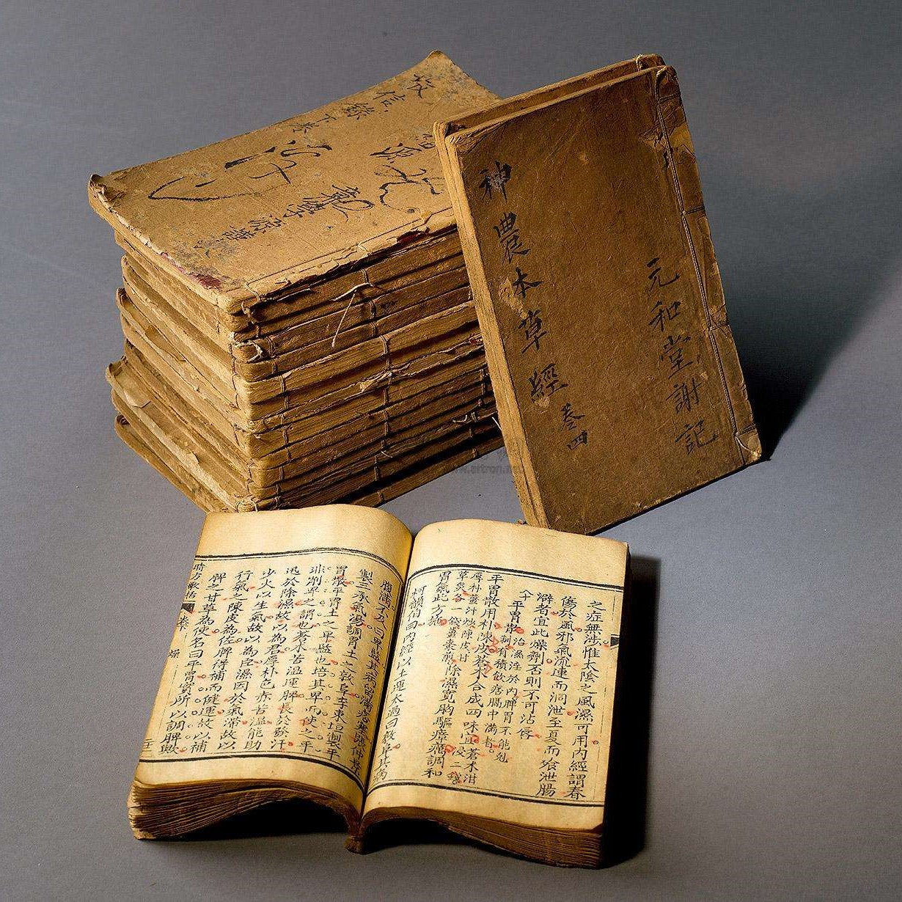

01
作者
吕旭升，金梅
02
归属类别
中医学类书籍
03
别名
《经方百案研读》
04
影响评价
著名中医书籍
| 书籍简介
在《经方百案研读》中，作者选取了使用伤寒理论和伤寒经方进行辨证论治的名医验案一百一十案进行研读，出处包括《吴佩衡医案》《经方实验录》《刘渡舟验案精选》等。第一步是阅读患者的证候；第二步是自己独立进行辨证论治；第三步是研读医案中的医生的辨证论治过程；第四步是将自己的辨证论治和医案中的辨证论治进行对比研究，提出各自得失、所得的启示，以及暂时无法解答的疑问。这种研读区别于常见的医案解读类图书，没有一味顺承医案，而是提出了自己的独立见解，己见跟验案所见对比，提出其得失、启示、疑问。比较研究的方法和坦率直书的写作，决定了《经方百案研读》具有独特的、比较高的价值！适宜中医学者、中医临床工作者和爱好者在理论学习和临床工作中参考。《经方百案研读》作者多年深研《伤寒论》和《金匮要略》，在此过程中形成了一套独特的研究方法。
